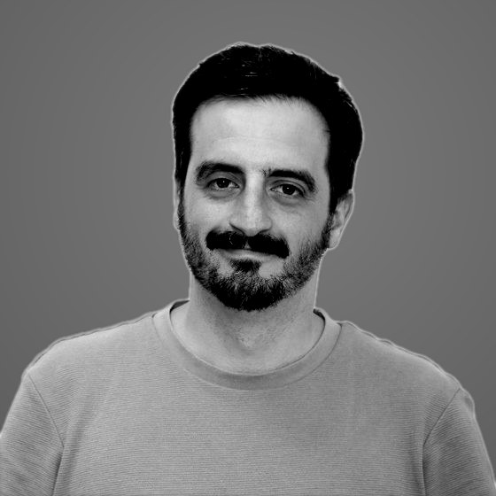

Venimos de consumo masivo: multinacionales, multilatinas, empresas
nacionales y familiares, con modelos comerciales complejos. No estuvimos solo tomando decisiones
desde la gerencia: operamos el día a día y resolvimos los problemas de
primera mano.

Daniel Restrepo
Madurez digital / Analítica / Automatización con IA
Fue gerente general de una compañía de fragancias, a cargo de la caja,
el inventario y el equipo. Antes, marketing regional para media
Latinoamérica en una multinacional de belleza. Convierte el análisis
en herramientas que el equipo sigue usando.
María Isabel Tangarife
Marcas / Categorías / Portafolio
Lidera marcas, categorías y portafolios en belleza, moda, retail y
lujo. Ha trabajado en América Latina, Francia y Canadá: entornos
multiculturales y multilingües donde convierte oportunidades de
mercado en productos y estrategias que generan crecimiento.
Nicolás González Chavarriaga
Estrategia comercial / Fuerzas de ventas / Desarrollo de canales
Gerente comercial con trayectoria en consumo masivo, venta directa y
negocios multicanal. Lideró la estrategia de venta directa de una
multinacional de belleza para 12 mercados de Latinoamérica y formó
parte del comité directivo de una compañía de moda, con
responsabilidad sobre una estructura comercial de más de 200
personas. Diseña y transforma estrategias comerciales, fuerzas de
ventas, incentivos y canales para impulsar el crecimiento rentable y
sostenible de los negocios.

Mathias Rommel
Estrategia comercial / Venta directa / Social commerce
Más de 12 años en una multinacional de belleza, entre roles regionales para seis mercados de Latinoamérica y locales en Argentina, con portafolios multimarca y multicategoría. Lideró la transformación digital de la venta directa hacia el social commerce. Une la visión estratégica con el conocimiento del día a día.
Andrés Ardila
Operaciones / Procesos / Mejora continua
Ingeniero biológico. Operaciones y transformación, ex director de
operaciones de una corporación de alimentos donde escaló la operación
seis veces en 41 meses.
John Restrepo
Dirección estratégica / Gobierno corporativo / Finanzas
Dirección estratégica y gobierno corporativo. Viene del retail de lujo
y de la inversión: private equity, venture capital y estructuración de
family offices.
Trabajamos con una regla: lo que dejamos sigue funcionando sin nosotros.